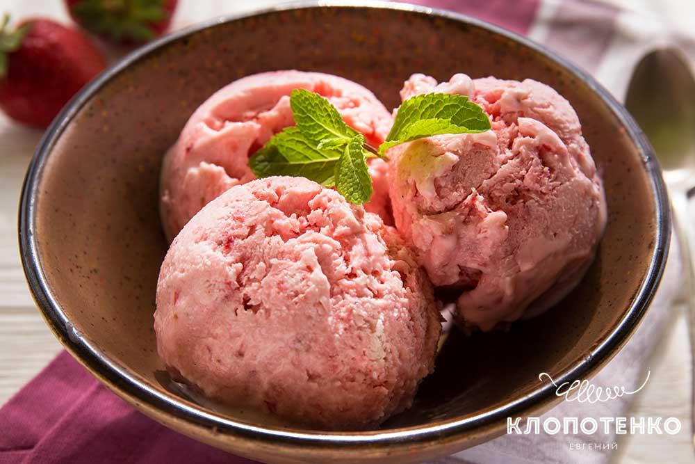

Меню
Як зробити домашній пломбір
- Молоко - 150 г.
- Вершки жирні - 500 г.
- Яєчні жовтки - 3 шт.
- Цукор - 150 г.
- Ванілін або ванільний цукор за смаком.
Молоко злегка підігріти, але не кип'ятити. Жовтки збити з цукром за допомогою вінчика. Влити в жовткову суміш гаряче молоко і продовжити збивати, поки не розчиниться весь цукор. Перелити масу в каструлю і, постійно помішуючи лопаткою, довести на середньому вогні до легкого загустіння. Каструлю поставити в ємність з крижаною водою і остудити до кімнатної температури. Збити до кремоподібної консистенції холодні вершки прямо з холодильника. Влити вершки молочно-яєчну суміш. Додати ваніль і перемішати до однорідності. Викласти масу в широку форму, накрити кришкою і поставити в морозилку на 4 години.